Field DeRotator Controller User's Guide
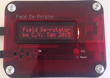
by
C.Y. Tan
June 2015
Copyright
Copyright (C) 2015 C.Y. Tan
Permission is granted to copy, distribute and/or modify this document
under the terms of the GNU Free Documentation License, Version 1.3
or any later version published by the Free Software Foundation;
with no Invariant Sections, no Front-Cover Texts, and no Back-Cover Texts.
A copy of the license is included in the section entitled "GNU
Free Documentation License".
Table of Contents
Introduction
This is the guide for operating the controller of the Field DeRotator. The
controller connects directly to the derotator. You can
- use the controller to control the derotator directly
- communicate with the controller via a serial line and control
the derotator using the interface
- communicate with the controller via WIFI and control the
derotator using the interface
The first method will be discussed here. The second and third methods
are discussed in the Interface User's Guide.
Nomenclature
Interface
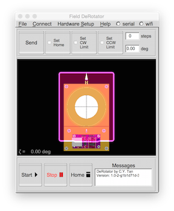
Controller

DeRotator
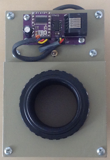
Pushbutton switches
The controller has push button switches
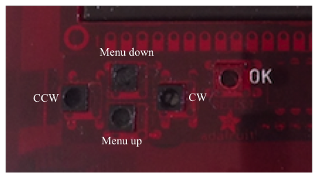
that do the following when you push them:
- Menu up and down buttons are used to move the menu cursor up
and down.
- Menu items are selected using the OK button.
- The camera can be rotated clockwise (CW) and counter-clockwise (CCW) by continuously
pressing these two buttons. If the CW or CCW limits are enabled and reached, the camera will stop
rotating even if you continue pressing these buttons. A message will
popup that tell you that these limits have been reached.
Exiting a menu
To exit a menu, you scroll down to the menu item using the Menu
up/down buttons. Here is an example of the EXIT menu item
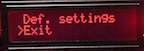
Then you press the OK button to exit the current menu.
Connecting the controller to the derotator
The controller is connected to the derotator with an ethernet cable
from the driver socket on the controller to the input socket on the derotator.
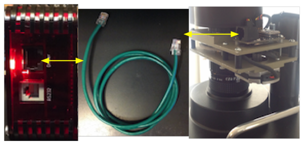
The controller is connected to the LX200 with a 6P6C (reversed) cable
from the RS232 socket on the controller to the RS232 socket on the LX200.
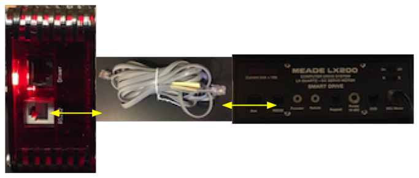
The controller is powered with a 9 V brick power supply.
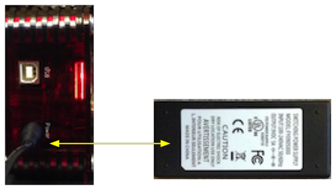
Setting up Hall and User home for the first time
This, in principle, is only done once when you first attach the camera
to the derotator. You have to define where the Hall and User homes are
and then save these positions into the EEPROM. Once this is done, you
do not need to do this again unless you remove the camera from the derotator.
Setting Hall home
The first thing you have to do is to mark the Hall home position on the camera and the
derotator. The Hall home position defined to be where the magnet on
the drive gear meets the Hall switch.
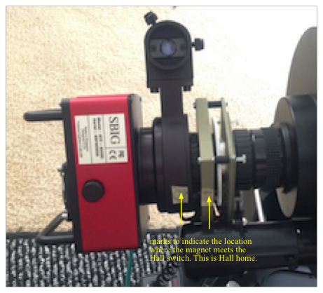
These markings can be approximate because for accuracy, you will use
the controller to rotate the camera to find Hall home. Select
Control Menu → Goto HALL HOME
 Once the controller finds the Hall home by rotating CCW, this message
pops up for about 2 seconds
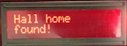
The controller will only rotate CCW to find Hall home! You can
rotate the camera using the CW and CCW buttons to ensure that when
Goto HALL HOME
is selected, the camera is at a position when this
command is executed, Hall home can be found.
Once the controller finds the Hall home by rotating CCW, this message
pops up for about 2 seconds
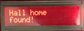
The controller will only rotate CCW to find Hall home! You can
rotate the camera using the CW and CCW buttons to ensure that when
Goto HALL HOME
is selected, the camera is at a position when this
command is executed, Hall home can be found.
If the Hall home is not found after rotating by CCW by 10 degrees, an
error pops up for 2 seconds
 You continue executing the
Goto HALL HOME command until Hall home is found.
You continue executing the
Goto HALL HOME command until Hall home is found.
Setting User home
You have to rotate the camera with the CW and CCW buttons on the
controller so that it is vertical. You can use a
bubble level to determine when the camera is vertical.
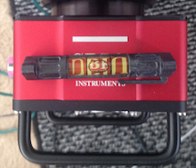
Once you have found the vertical, you have to tell the controller that
this is the User Home that you have found
Settings → Set User Home
 And you save this position to EEPROM so that you do not need to do
this again unless you remove the camera from the derotator.
Settings → Save settings
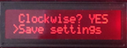
And you save this position to EEPROM so that you do not need to do
this again unless you remove the camera from the derotator.
Settings → Save settings
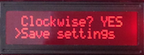
Setting up HOME (normal operations)
After you have powered up the controller and derotator, the first
thing you need to do is to calibrate the system by finding Hall
Home. You do this by rotating the camera with the CW and CCW buttons
until the markings on the camera and the derotator, that indicate where
the magnet and Hall switch are, line up approximately. You then select
Control Menu → Goto HALL HOME
Once the controller finds the Hall home by rotating CCW, this message
pops up for about 2 seconds
The controller will only rotate CCW to find Hall home! You can
rotate the camera using the CW and CCW buttons to ensure that when
Goto HALL HOME
is selected, the camera is at a position when this
command is executed, Hall home can be found.
If the Hall home is not found after rotating by CCW by 10 degrees, an
error pops up for 2 seconds
You continue executing the
Goto HALL HOME command until Hall home is found.
You exit this menu and go back to
Control Menu → Goto User Home
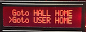
and select Goto User Home. If you had previously saved User Home Position into the EEPROM,
the camera will rotate to the User Home Position. This is the "HOME"
position that you should set the camera up before using the
interface.
Rotating to an arbitrary angle
You can rotate the camera any arbitrary angle by pressing either the
CCW or CW buttons
The only constraint is that if limits are enabled, then when the
limits are reached, a message will pop up telling you that you have
reached a limit.
Setting the CW and CCW limits
You rotate the camera to the CCW or CW positions where you wish to
limit the rotation angle. After you have rotated the camera to the
position that you desire, you select
Setup Menu → Set Max CW
or
Setup Menu → Set Max CCW
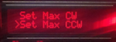
Then you enable the rotation limits by selecting
Setup Menu → Enable limits?
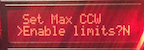
Derotation
The goal of the derotator is, of course, to perform derotation.
You can start derotation after you have connected the controller to
the telescope and power supply.
Starting the derotation
You start derotation by selecting
Start
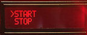
A display pops up to show the alt-az angles (η, ξ) of the telescope, and
the derotating angle ζ. This is an example of the display that
you should see
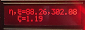
Stopping the derotation
You can stop derotation at any time by pressing the OK button.

Saving and loading configurations
You can save the User Home, IP address, and other parameters of the derotator
into the onboard EEPROM by selecting
Setup Menu → Save settings
You can reload these settings by selecting
Setup Menu → Load settings
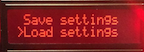
On controller bootup, these settings are automatically loaded.
Other settings
Is correction clockwise?
You can choose the direction of the derotation by selecting this
option
Setup Menu → Clockwise?
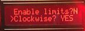
GNU Free Documentation License
This document is copyrighted under the GNU Free Documentation License